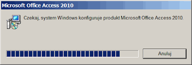
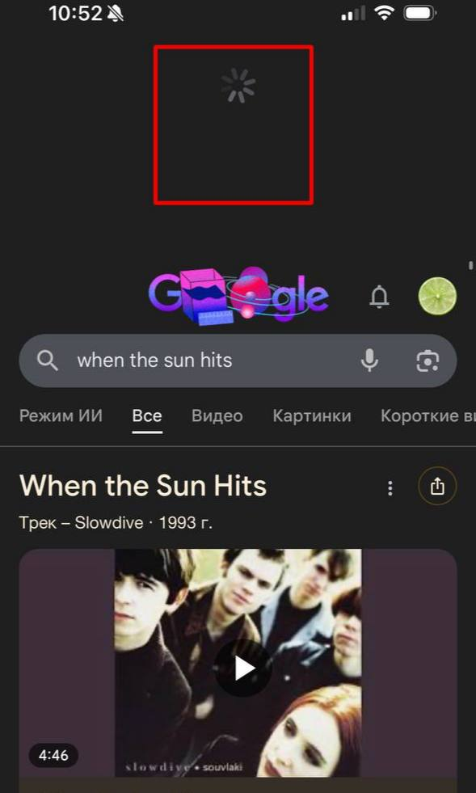

1. Widoczność statusu systemu
EN: Visibility of system status. The design should always keep users informed about what is going on...
PL: Projekt powinien zawsze informować użytkowników o tym, co się dzieje, poprzez odpowiednią informację zwrotną w rozsądnym czasie.
Przykład 1: Strona Internetowa (Desktop)

Uzasadnienie: Pasek postępu informuje użytkownika, ile danych zostało już przesłanych, co daje poczucie kontroli i pewność, że system pracuje.
Przykład 2: Aplikacja Mobilna

Uzasadnienie: Ikona "spinnera" podczas odświeżania listy pokazuje, że przeglądarka pobiera nowe dane.